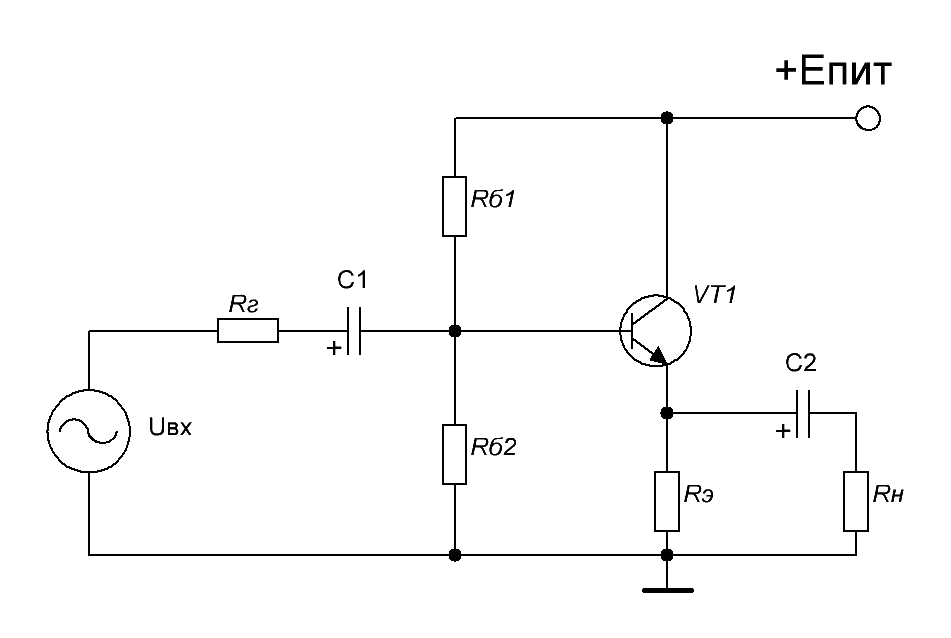

Результаты расчета:
Сопротивление базы Rб1:
Сопротивление базы Rб2:
Сопротивление эмиттера Rэ:
Рекомендуемая емкость конденсаторов С1 и C2, не менее:
Сопротивление базы Rб1:
Сопротивление базы Rб2:
Сопротивление эмиттера Rэ:
Рекомендуемая емкость конденсаторов С1 и C2, не менее:
Схема включения с общим коллектором (эмиттерный повторитель) является является одной из трех возможных конфигураций транзисторных усилителей на биполярном транзисторе. В данной схеме включения сигнал поступает на базу транзистора и снимается с эмиттера. Коллектор же подключается к общему проводу. Как правило, в аналоговой схемотехнике данный тип включения используется для согласования предоконечного каскада (в качестве буферного каскада) с нагрузкой, имеющей малые номиналы.
Достоинства схемы:
Недостатки схемы: